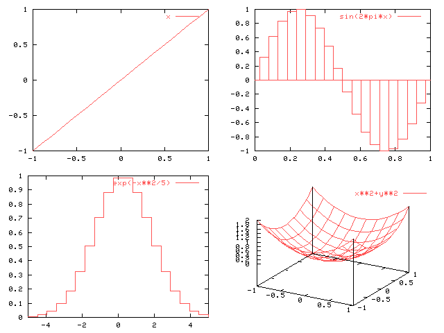

| Herramientas en GNU/Linux para estudiantes universitarios: | ||
|---|---|---|
| Anterior | Capítulo 9. Usos avanzados. Truquillos de gurú | Siguiente |
En este caso lo que se pretende es representar en la misma pantalla varios gráficas independientes, cada una con su propio sistema de referencia. Esto se puede hacer con la opción "set multiplot", y dividiendo el espacio disponible en porciones con "set size" y "set origin". Por ejemplo para dibujar cuatro gráficas en una cuadrícula 2x2 haríamos lo siguiente:
set multiplot
set size .5,.5
set origin 0,.5
plot x
set origin .5,.5
plot [0:1] sin(2*pi*x) with boxes
set origin 0,0
plot [-5:5] exp(-x**2/5) with steps
set origin .5,0
splot [-1:1][-1:1] x**2+y**2
set nomultiplot

Dependiendo del dispositivo de salida, las gráficas no se dibujarán hasta que se pase a modo normal con "set nomultiplot". En otras las gráficas irán apareciendo pero no se podrá borrar la pantalla (con el comando "clear") o se borrarán todas las gráficas.
Si el dispositivo de salida es el sistema X ("set term x11"), es posible obtener varias gráficas a la vez, cada una en su propia ventana. Para ello simplemente hay que pasar un parámetro más al comando "set":
set term x11 n
Donde "n" es un entero, identificador de la ventana X en la que se va a dibujar la gráfica. Si la ventana ya existe, se reutilizará. Si no existe se creará de nuevo. Es posible definir tantas ventanas como sea necesario.